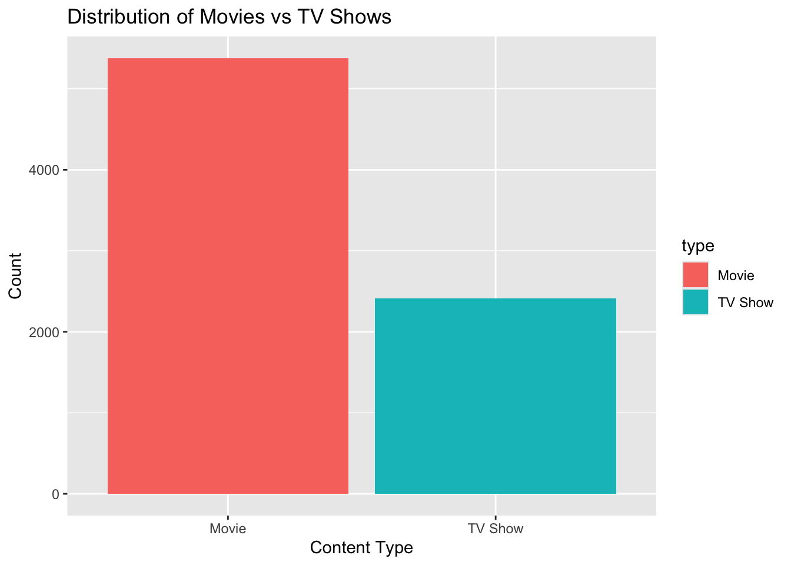

# A tibble: 5 × 2
month avg_weight
<date> <dbl>
1 2020-06-01 78.8
2 2020-07-01 219.
3 2020-08-01 473.
4 2020-09-01 1128.
5 2020-10-01 959. Data Science Final Presentation
12/09/2024
Project 1 - Part 1: Lisa’s Vegetable Garden
Dataset: TidyTuesday’s May 28, 2024 release.
- Records from Lisa Lendway’s 2020 and 2021 vegetable gardens.
- Includes planting, harvesting, and spending data.
Plan: Explore harvest trends in 2020 by calculating average monthly harvest weights and visualizing seasonal patterns.
Findings:
- Harvest weights increased steadily from June, peaked in September, and declined slightly in October.
- Developed skills in data wrangling, date manipulation, and visualization with the tidyverse.
Visulization
Project 2 - Part 2: Carbon Emissions
Dataset: TidyTuesday’s May 21, 2024 release.
- Historical emissions data from 1854–present.
Plan: Summarize average annual carbon emissions and visualize trends over time.
Findings:
- Emissions rose sharply during the mid-20th century, reflecting industrialization and increased energy use.
- Strengthened skills in data summarization, trend analysis, and visualization using the tidyverse.
Visulization
summary_data <- emissions |>
select(year, total_emissions_MtCO2e) |>
group_by(year) |>
summarize(ave_emissions = mean(total_emissions_MtCO2e, na.rm = TRUE)) Project 2: Netflix Title Analysis
- Dataset: TidyTuesday’s April 20, 2021 release.
- Metadata on Netflix movies and TV shows, including release years, titles, and associated details.
- Plan: Explore trends in Netflix’s content catalog:
- Analyze the distribution of movies vs. TV shows.
- Examine release year trends and common title keywords.
- Findings:
- Netflix’s library is dominated by movies and modern content (post-2000).
- Learned to apply string manipulation and visualization techniques with tidyverse.
Visualization 1
netflix_type_count <- netflix |>
count(type)
Visualization 2
netflix_year_count <- netflix |>
count(release_year) |>
arrange(desc(n))
Visualization 3
Project 3: NCAA Home-Court Advantage
- Dataset: Kaggle March Madness Data (2008–2024, excluding 2020).
- Plan: Test the null hypothesis of no difference in win percentages between home and away games using permutation testing.
- Findings:
- Observed a 31% higher win percentage at home.
- Learned to simulate random outcomes, perform hypothesis testing, and visualize results.
Permutation and Null Hypothesis Test
#Calculate the Observed Difference in Median Win Percentage
observed_diff <- combined_median_data |>
group_by(location) |>
summarise(median_win_pct = median(median_win_pct, na.rm = TRUE)) |>
summarise(diff = diff(median_win_pct)) |>
pull(diff)
cat("Observed Difference in Median Win Percentage (Home - Away):", observed_diff, "\n")Observed Difference in Median Win Percentage (Home - Away): 31.16884 # Define Permutation Function (Shuffling location within each team)
calculate_permutation <- function(data) {
data |>
group_by(TEAM) |>
mutate(location = sample(location, replace = FALSE)) |>
group_by(location) |>
summarise(median_win_pct = median(median_win_pct, na.rm = TRUE)) |>
summarise(diff = diff(median_win_pct)) |>
pull(diff)
}
#Permutation Test
num_permutations <- 10000
perm_results <- map_dbl(1:num_permutations, ~ calculate_permutation(combined_median_data))
# Calculate the two-sided p-value
p_value <- mean(abs(perm_results) >= abs(observed_diff))
cat("Two-Sided P-value:", p_value, "\n")Two-Sided P-value: 0 Visulization
Project 4: SQL Analysis of WAI Auditory Data
- Goals: Recreate Figure 1 from Voss (2019) and analyze absorbance trends by age.
- Approach: Use SQL to query the WAI Database and R for visualization.
- Findings:
- Replicated Voss (2019) Figure 1 for 12 studies.
- Found age-related differences in Hunter (2016), including NICU data.
Visulization 1: Recreating Voss Graph
SELECT
Measurements.Identifier,
PI_Info.AuthorsShortList,
Measurements.Instrument,
Measurements.Frequency,
AVG(Measurements.Absorbance) AS MeanAbsorbance,
CONCAT(PI_Info.AuthorsShortList, ' et al. N=',
COUNT(DISTINCT CONCAT(Measurements.SubjectNumber, Measurements.Ear)), ', ', Measurements.Instrument) AS Legend_Label
FROM Measurements
JOIN PI_Info ON Measurements.Identifier = PI_Info.Identifier
WHERE Measurements.Identifier IN ('Abur_2014', 'Feeney_207', 'Groon_2015', 'Lewis_2015', 'Liu_2008', 'Rosowski_2012', 'Shahnaz_2006', 'Shaver_2013', 'Sun_2016', 'Voss_1994', 'Voss_2010', 'Werner_2010')
AND Measurements.Frequency >= 200 -- Apply frequency filter in SQL
GROUP BY Measurements.Identifier, Measurements.Instrument, PI_Info.AuthorsShortList, Measurements.Frequency;Visulization 2: Deeper look into Hunter 2016 Study
SELECT
Subjects.AgeCategoryFirstMeasurement AS AgeCategory,
Measurements.Frequency,
AVG(Measurements.Absorbance) AS MeanAbsorbance
FROM Measurements
JOIN Subjects ON Measurements.SubjectNumber = Subjects.SubjectNumber
WHERE Measurements.Identifier = 'Hunter_2016'
AND Measurements.Frequency >= 200 -- Apply frequency filter in SQL
GROUP BY Subjects.AgeCategoryFirstMeasurement, Measurements.Frequency;